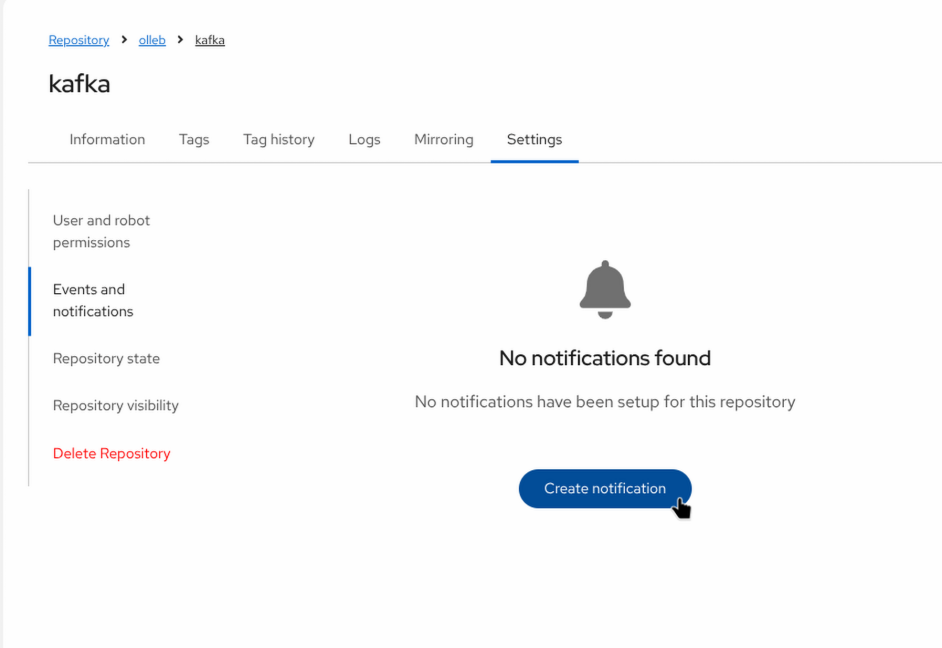
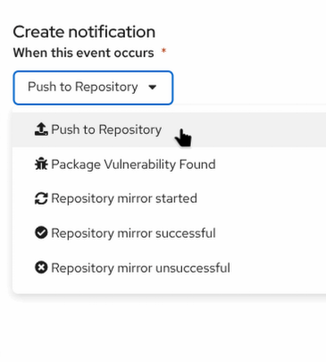
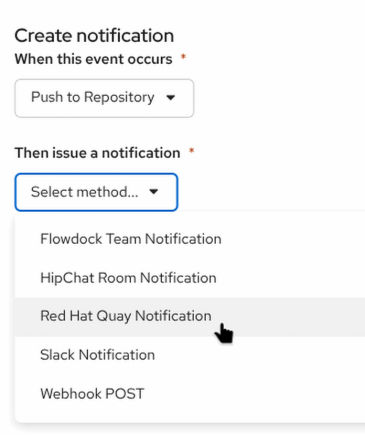
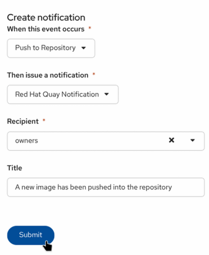
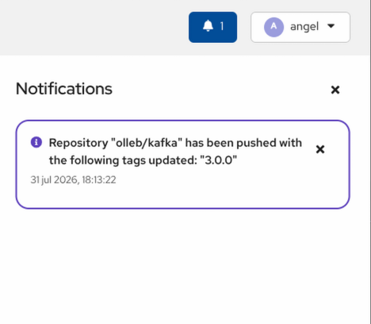
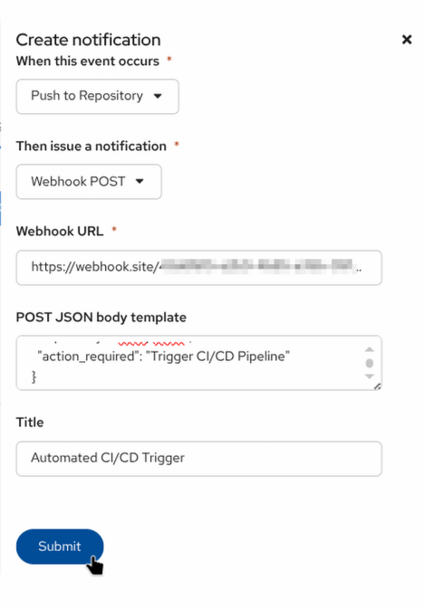
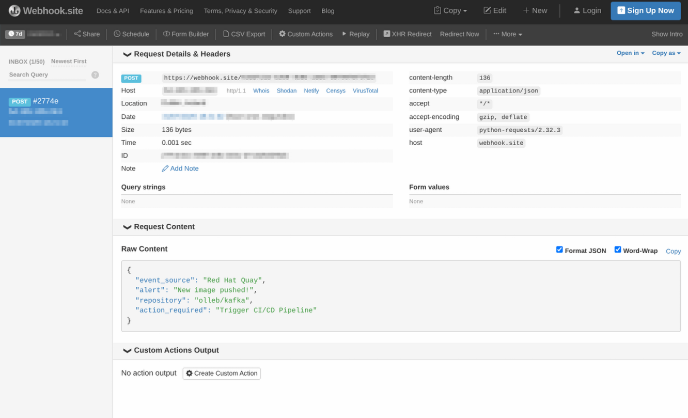

Repository Notifications
In a collaborative DevOps environment, staying informed about registry activity is critical. Red Hat Quay supports event-driven notifications at the repository level, allowing administrators and automated systems to react instantly to changes during the repository lifecycle.
You can configure Quay to listen for specific Events (such as a new image push, a tag deletion, or a vulnerability discovery) and respond with various Actions (such as internal UI alerts, Emails, Slack messages, or Webhooks to trigger external CI/CD pipelines).
Creating a Push-to-Repository Event Notification
In this first exercise, we will configure a simple internal notification that alerts the repository owners within the Quay UI whenever a new image is pushed.
-
From the Red Hat Quay Dashboard, ensure you have a repository named
kafkaunder yourolleborganization.(If it does not exist, click Create Repository in the top right, name it
kafka, and click Create). -
Navigate to the
olleb/kafkarepository. -
On the top menu, click Settings.
-
Scroll down to the Events and notifications section and click the Create Notification button.

-
Configure the notification parameters:
-
When this event occurs: Select
Push to Repository.
-
Then issue a notification: Select
Red Hat Quay Notification.
-
Recipient: Select
owners. -
Notification title: Enter
A new image has been pushed into the repository.
-
-
Click Submit to save it.
Triggering the Notification
Let’s test the configuration by pushing a new image tag to the repository.
|
UI Test Button vs. Real Push |
-
Pull an image, tag it, and push it to your registry:
export QUAY_HOSTNAME=$(oc get route registry-quay -n quay-workshop -o jsonpath='{.spec.host}') podman pull quay.io/strimzi/kafka:latest-kafka-3.0.0 podman tag quay.io/strimzi/kafka:latest-kafka-3.0.0 ${QUAY_HOSTNAME}/olleb/kafka:3.0.0 # Log in if you are not already authenticated podman login ${QUAY_HOSTNAME} podman push ${QUAY_HOSTNAME}/olleb/kafka:3.0.0 -
After a few moments, switch back to the Quay UI. A notification bell will appear at the top of the dashboard indicating the event.

Simulating a CI/CD Trigger with Webhooks
While internal UI notifications are useful for human administrators, modern automated workflows rely on external triggers. Red Hat Quay can send HTTP POST requests (Webhooks) containing rich JSON payloads to external endpoints. This is commonly used to trigger OpenShift Pipelines (Tekton), Jenkins builds, or ArgoCD syncs.
In this exercise, we will use a free webhook testing service to capture and inspect the payload Quay sends.
-
Open a new browser tab and navigate to
https://webhook.site. -
The site will automatically generate a unique, temporary URL for you. Click Copy to clipboard next to Your unique URL (it should look like
https://webhook.site/xxxx-xxxx-xxxx). -
Return to the Red Hat Quay UI and navigate to the Settings > Events and notifications of your
olleb/kafkarepository. -
Click Create Notification and configure it as follows:
-
When this event occurs:
Push to Repository -
Then issue a notification:
Webhook POST -
Webhook URL: Paste the URL you copied from
webhook.site. -
POST JSON body template: Quay allows you to customize the payload to match the exact schema expected by external tools (like Slack or Tekton). Paste the following custom JSON template:
{ "event_source": "Red Hat Quay", "alert": "New image pushed!", "repository": "olleb/kafka", "action_required": "Trigger CI/CD Pipeline" } -
Title:
Automated CI/CD Trigger
-
-
Click Submit.

Inspecting the Webhook Payload
-
From your terminal, push a new tag to the repository to trigger this new webhook:
podman tag ${QUAY_HOSTNAME}/olleb/kafka:3.0.0 ${QUAY_HOSTNAME}/olleb/kafka:3.0.1 podman push ${QUAY_HOSTNAME}/olleb/kafka:3.0.1 -
Switch back to your
webhook.sitebrowser tab. -
You should immediately see an incoming
POSTrequest appear on the left panel. -
Select the request and inspect the Raw Content.

_Notice that instead of Quay’s massive default payload, the webhook delivered your exact custom JSON template along with the title you specified. This powerful feature allows Quay to integrate natively with almost any third-party API without requiring middleware!_ca